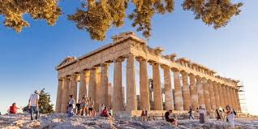
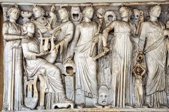
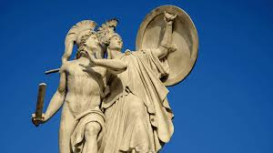
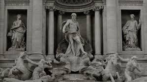
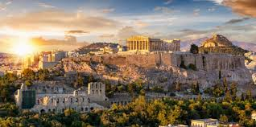
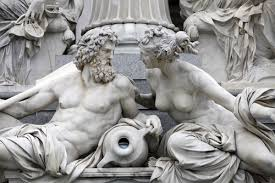
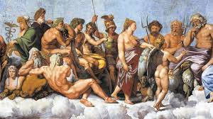
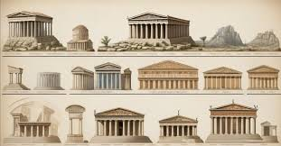

| Inicio | Lugares | Gastronomia | Tour |
|  |  |  |  |
| -Civilizaciones antiguas | -Arte griego | -Mitologia Griega | -Arquitectura |
|
|
La mitología griega narra historias sobre dioses, héroes y el origen del mundo. Incluye figuras como Zeus y héroes como Heracles. Mitos como la Guerra de Troya enseñan lecciones morales y han dejado una gran influencia en la cultura occidental. | La arquitectura griega se caracteriza por tres estilos: dórico (sencillo), jónico (elegante) y corintio (decorado). Los templos y teatros, como el Partenón y el Teatro de Epidauro, son ejemplos clave. Su diseño influyó en la arquitectura romana y occidental. |
|  |  |  |  |
| Todods los derechos reservados 2025© | -Dayana Jave -Alexa Limas -Emilio Ornelas |
||